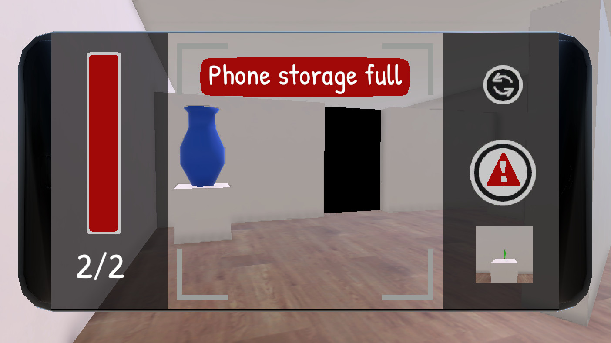
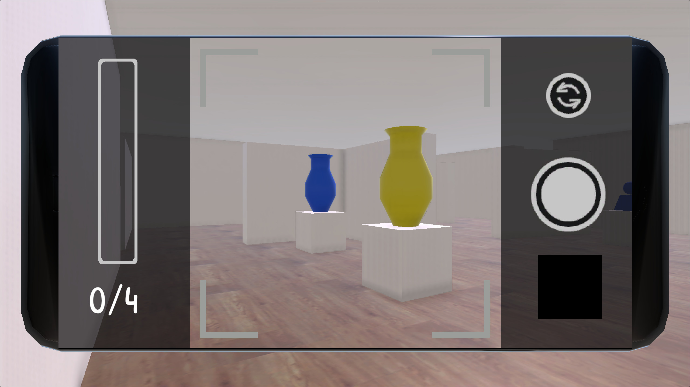
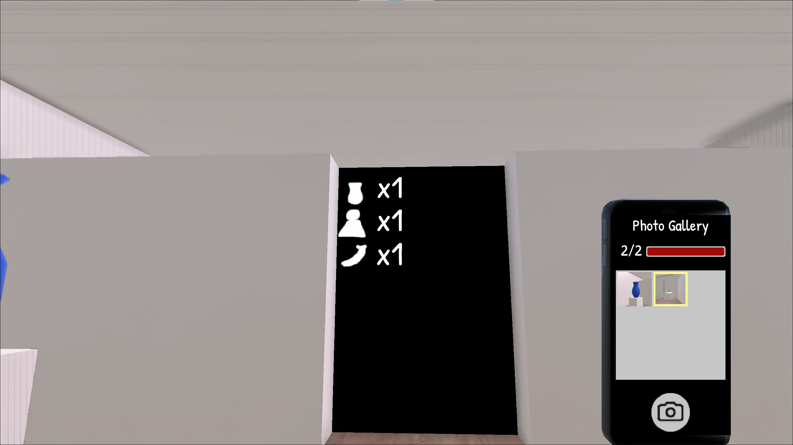

Andrew Knowles
Discrete Math and Game Design @ CMU
Discrete Math and Game Design @ CMU
Small camera-based puzzle game built in 48 hours for Ludum Dare 54. Made in Unity, with custom assets, levels, photo taking/deleting mechanics. Placed 72nd overall, 16th in innovation for solo competition category.
I've participated in a few game jams before with varying success, but I happened to be particularly inspired to make a small Unity game when I learned that my professor for Computer Game Programming was offering extra credit for participation in Ludum Dare 54. Since that offer only included solo, "Compo" submissions, I had to get creative by myself.
The theme for the event was "Limited Space." I brainstormed a few ideas about what that could mean, such as room size, inventory space, and a joke about limited use of the space bar.
In the end I opted for a phone with limited storage capacity, with taking and deleting photos as the main interactions. This would give me clear fun mechanics to design and implement (my favorite way to start any project), and some opportunities for level design in 3D.
So I knew I wanted to have a camera that could take and delete photos. As far as the actual gameplay, my first idea was to have certain objects get deleted in the "real" world when their photos are deleted. This would be unexpected and maybe unsettling at times, with the goal of the game to keep as many photos as possible (only deleting when truly necessary).
However, when I started thinking about how to introduce and teach gameplay, I realized line-of-sight made more sense as a main mechanic, partially because I didn't like the idea of people "losing points" or failing, and keeping objects normal while forcing the player to find angles let people explore a bit more without being punished for taking the wrong photo.
It also just evolved naturally as I considered how to introduce the whole gallery storage limit thing, and iterate on gameplay- I would start with 2 photo slots and 2 objects, and taking their photos would open a new room. This room was basically the same but with 2 new objects, so players would need to use the delete action to get space for new photos. Once they know how to do that, it seems natural to try 3 objects with only 2 photos, letting them try lining up the right shot until they can proceed.
I managed to fit the object deletion in at the end, too. I'm a bit unsatisfied; to me it feels like I shoehorned it in there as a random variation as opposed to the central mechanic it was originally supposed to be. I wanted the deletable objects to look cool and have really interesting puzzles, but due to time they're just solid red and their puzzles are pretty simple. Still, most of the people I showed it to in real life seemed to appreciate the mechanic, imagining how it could be utilized more with more levels.

Implementation was generally pretty straightforward. The phone mesh has no screen, and a world space canvas in its place lets me show a camera view while keeping field-of-view the same. A second camera is used to take the screenshot, which is just attached to the main camera and ignores the phone mesh and screen. It simply reads pixels from the screen and crops the image to a square that's pretty much in line with the indicator on the phone screen. This is used for the gallery view and the most recent thumbnail in camera mode.
Each "picture" in the gallery actually consists of an image, and a list of deletable objects within that image. A separate game object, "CollectionManager," keeps track of each object which can be photographed, and which photos contain them. These both are updated each time a photo is taken or deleted- the deletable objects of a photo are deleted when the photo is, and the CollectionManager is checked when we try to proceed from one room to the next.
The hardest part was determining which objects are in a photo when we take one. I experimented with a couple ways- my goal at first was to check bounding boxes to make sure an object was sufficiently within the bounds of the frame. While I have the frustum for the actual player camera, the photos are cropped, meaning I had to use the screen-space square frame dimensions to somehow get a new frustum.
This went nowhere, so after a couple hours I gave up and just checked if object origins were in view using Camera.WorldToScreenPoint(), which is then easily compared to the screen-space* frame outline.
*Well, an estimate of the frame outline's screen-space coordinates, since the phone screen is in world space. I played around until it was good enough.
Unsurprisingly, the short timeframe meant I had to cut some corners. A major flaw with this project was the lack of audio. I think some ambience and photo sfx would have improved the "mood" score quite a bit, but I just didn't have time and had to focus on other aspects I judged to be more important.
The visuals could also use some improvements. Art isn't my specialty so I'm generally fine with the art direction in the game (simple and low-fidelity), which also fits well with the graphical limits of WebGL. However, the photographable object models and doors caused some confusion for players, since they were created in the final minutes before submission.
In particular, the fact that I reused the same 3 art installations throughout the levels caused some players to backtrack thinking they could use objects in early levels to open doors in later levels (since the doors themselves only listed the type of object necessary, not specifying it had to be from the current room).
Of course, just using completely unique models would solve that issue, which is a time problem. I'd also like to improve the doors, both visually (the drawings were done in 5 minutes) and interaction-wise. Right now the player simply walks up to the door and it opens if its requirements are met. I think a more dynamic response as photos are taken would be more satisfying as players could immediately tell if they are making progress.
Overall, though, I'm pretty happy with how this game turned out, both personally and with my score (72nd overall and 16th for innovation is pretty good out of 489 Compo submissions, and that's with low scores for "graphics," "mood," and "humor," the last of which I definitely should have opted out).
Feel free to check out the game here, or view my source code here.